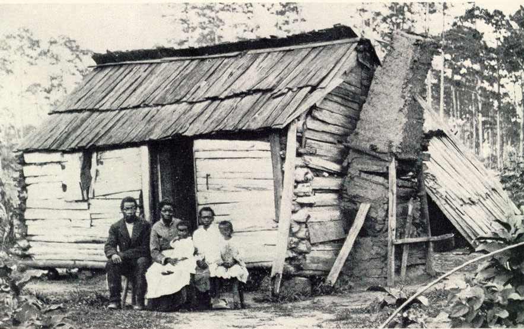
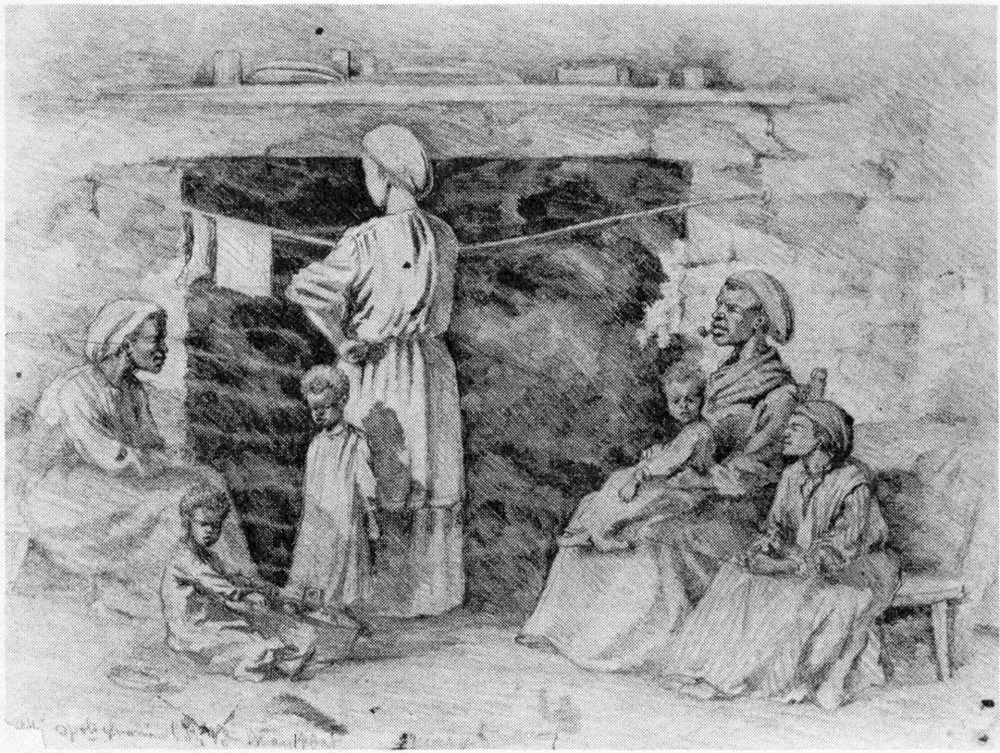
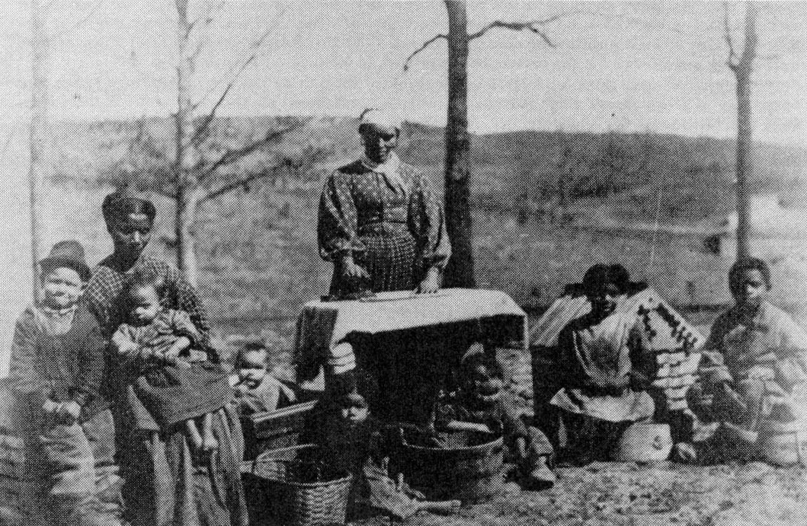
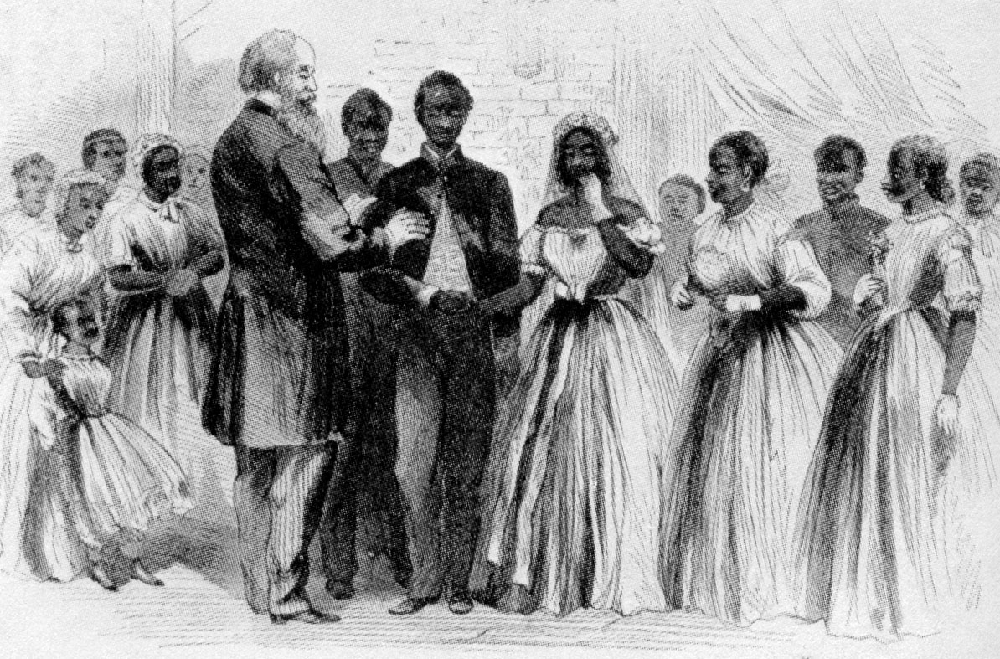

|

The involvement of the Freedmen's Bureau in the establishment of
African-American family structure is rarely discussed as one of the
Bureau's major activities. Although the Bureau is though of having been
ineffective overall, many historians credit the Bureau for having succeeded in the providing freedmen with education and the power of negotiating fair labor contracts. These two services are often cited because the right to education and the right to cho
ose one's employment are commonly thought of as
the two most important rights that were denied to slaves. However, the
cruelest aspect of slavery may have been the denial of a slave's right
to a secure family structure.
Current social theorists emphasize strong family relationships as being paramount for an individual's emotional and mental health. (Owens 191-192) A stable nuclear family was almost impossible to maintain under slavery. Marriage between slaves was not legally recognized. Slaves requested permission from their masters to be allowed to marry and the recognition of the union only came from within the slave community. The slave marriage ceremony, if one was held at all, varied from the couple jumping over a broomstick together to exchanging vows in front of a white minister. Whatever the nature of the wedding ceremony, slave marriages ultimately depended on the will of the masters. Some slaves were forced into "marriage" for breeding purposes. (King 64, Owens 93, Unwritten 1) Husbands, wives, and children were often separated when sold. To many whites, the slave family consisted of transient members who could be easily exchanged emotionally by the slave as they could physically by the master. Because of this, slaves obtained a reputation among whites as being immoral and devoid of family values. (Owens 193) To the surprise of many whites, countless number so freed slaves attempted to find their long lost relatives at the end of the war. (Litwack 229) Unfortunately, the chances of locating a family member were slim. Years had past and physical appearances had changes and information, which was mainly obtained by word of mouth, was often outdated or inaccurate. (Litwack 230)
The Freedmen's Bureau Agents did their best to help freedmen reunite
and establish families according to the accepted practices of white
America. The Bureau functioned as a clearinghouse of information,
assigned its agents to investigate leads to the whereabouts of family
members and spouses, and sometimes provided transportation to reunite
families.
(Litwack 231)
Freedmen and freedwomen turned to the Bureau for assistance
in resolving domestic problems such as abandonment and divorce. The
establishment of a stable family structure for among freedmen was believed
to be an essential for integrating ex-slaves into civilized life.
(

Alice Moore, a 16 year old freed girl, solicited the help of the Staunton
Bureau in may of 1865 to locate her parents Roderick Moore and Sally Moore,
who had belonged to William Hayward and Nicholas Bess respectively, in North
Carolina . Alice had been sold in Richmond in 1864-5 to Wm McFall of Augusta
County. Alice provided a great deal of information to the Bureau, including
the location of the each of the plantations. This case was passed through
the Virginia Headquarters, then the national, and then the agencies of the
North Carolina. After three months, the case was returned to the Staunton
Bureau without success. Roderick Moore and Sally Moore had apparently
left their former masters moved to New Berne, but the New Berne agent could
find no trace of them.
Most cases brought before the Bureau had very little information to start
the investigation with. Every possibility was explored in attempt to find
lost relatives. In December 1867,
the Agent Thomas P. Jackson of the Staunton Freedmen's Bureau
office requested that the Assistant Commissioner, John McDonnell, find a
former slave only known as "Uncle Flemming" in order to question him about
the whereabouts of the slave trader who had sold the children of Nancy
Thornton. This situation was typical of the process to find relatives. Freedmen had barely any information to start with. Slave traders were often sought with the hope that they would remember to whom the family member was sold to.

However difficult it was to locate a lost family member, it may have been
more difficult to reunite them because of finances. The Bureau did provide
transportation to freed people, but only in rare cases. The Bureau had very
little money and it was believed the responsibility to provide such services
fell upon local authorities. In the case of Betsey Brown, the Augusta Agents
attempted to reunite this African-American family despite the fact that the
Virginia State Bureau had refused financial aide. Betsy Brown had traveled
a long journey to Staunton from Mississippi in search of her father Gabriel
Brown who was reported to be living outside of Winchester. Betsy Brown had
three children with her and had run out of money before she could complete
her
journey. Inquiry was made and Gabriel Brown was located, but he was too poor
to pay for his daughter and grandchildren's passage. After the State Bureau's
rejection of the application for transportation, Assistant Commissioner
McDonnell instructs the Staunton Agent Jackosn to find the "lowest price"
for
the passage of Betsy Brown and her children to Winchester. This cases
attests to the dedication of the Augusta County Bureau officers to provide
for the needs of the freedpeople regardless of the opposition from within
the organization.
In the case of Marian Hall, the
problem was legal rather than financial. Marian Hall was attempting to regain
custody of his daughter, Mary Elizabeth who had been taken away from him
during slavery. S. C. Slaven currently possessed the girl and claimed
that she was indentured to him as repayment for the years he had provided
for her.
The legalities of the case were eventually resolved and Slaven
was ordered to had the child over to her father, however, then arose
the problem of financing her travels to him. No record was found as to
whether Marian Hall was reunited with his daughter, but it can be assumed
so from his anxious nature to be reunited with her.  For many black men, being the head of a strong family was a sign of their freedom and their masculinity. The stable family gave freed people the recognition in the eyes of the white society that they were capable of living within the structure of civilized society. (Taylor 164) However, the respect for marriage and family was not shared by all freedmen. This was undoubtedly due to the fact that the sense of parental responsibility and marriage fidelity were retarded by slavery. Under slavery, marriage was not legally binding and parents had little control over the fate of their children. Although masters were sympathetic to the bond between and a mother and child, they had no qualms about selling the father away from the family. Because of this, some black men felt little or no paternal responsibility and many black women felt no loyalty to their husbands. (Owens 195)
In 1868, the Staunton Bureau investigated the whereabouts of Cynis Bannister
who had been reported by his wife, Angeline Bannister to have left Staunton
in 1864 for Parkersburg., Agent, S. C. Colburn, who interviewed Cynis
Bannister "endeavored to impress upon him the importance of caring for his
children." Cynis stated that marital problems induced him to leave but that
he was planning to visit his wife and children in the spring. The fact that
it took four years for Angeline to search for her husband
or for Cynis to plan a trip to visit his wife attests to the weakness of the
marital bond between this couple.
In the case of David Collins, devotion to the marriage was strictly one way.
David Collins' wife had left Staunton for Winchester in September 1866 to visit her mother. Having heard nothing from her since, Collins solicited
the Bureau for help in finding her. The Bureau did locate her, but she was
living with a new husband. The right to legal marriage and divorce was
evidently valuable to David Collins as an aspect of his freedom. Collins
immediately requested information on how to legally nullify the marriage.
Many cases of polygamy surfaced after the war when freedmen located their spouses. Slaves frequently remarried after their spouses had been sold. Many polygamous relationships arose from attempts of freedmen to care for the two or more wives and families whom they had been reunited after the war. (Taylor 164)
Elizabeth Harris petitioned the Staunton Bureau for help in locating her
husband, James Harris in December 1867. James had apparently left Staunton
for Danville and had not been heard from since. The Bureau did locate him
working for the railroad outside of Danville, but discovered that he had two
other wives.
The Agents of the Freedmen's Bureau in Augusta County did their best to help the freedmen establish a strong family structure. Although its efforts were noble, the Freedmen's Bureau could do little to reverse the sociological effects of decades of slavery and had almost no funds or staff to to support in- depth investigations to locate loved ones. |